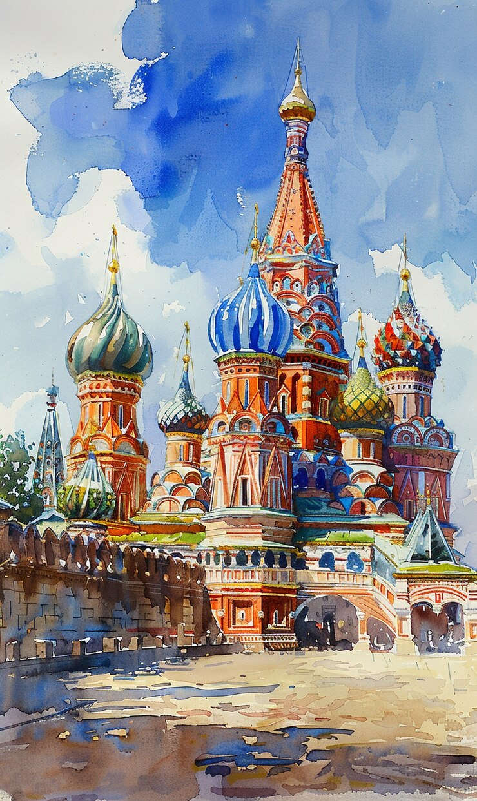

Красная площадь — это центральная площадь Москвы и один из самых известных символов России. Она расположена в самом сердце столицы и является важнейшей исторической, культурной и политической точкой города. Красная площадь соединяет Московский Кремль с торговым центром ГУМ, а также ведёт к знаменитому Собору Василия Блаженного, являясь местом проведения как торжественных мероприятий, так и многочисленных праздников и исторических событий. Красная площадь была основана ещё в XIV-XV веках и с тех пор претерпела несколько изменений. В те времена она служила торговой площадью, на которой проходили ярмарки и различные публичные мероприятия. В XVII веке площадь приобрела свой нынешний облик и стала центром политической жизни города. Её название не связано с цветом кирпичной мощёнки, как можно было бы подумать, а с русским словом "красный", которое в старину означало "красивый" или "прекрасный". Собор Василия Блаженного, расположенный на южной стороне площади, является одной из самых узнаваемых архитектурных построек в мире. Построенный в 1555-1561 годах по приказу Ивана Грозного в честь взятия Казани, собор привлекает туристов своими яркими, многогранными куполами и уникальной архитектурой. Его загадочные формы и орнаменты стали не только символом православной веры, но и важным культурным памятником. Северную часть площади занимает Мавзолей В.И. Ленина, где находится гробница основателя Советского Союза. Это историческое место, где проводятся важнейшие мемориальные мероприятия, такие как годовщины Октябрьской революции, а также здесь проходят торжественные шествия и другие события. Государственный универсальный магазин (ГУМ) — это ещё одна знаковая постройка на Красной площади. Здание ГУМа было построено в 1893 году и стало одним из крупнейших торговых центров того времени. Сегодня это исторический памятник и современный торговый центр, популярный среди туристов и москвичей. В ГУМе можно найти как роскошные бренды, так и классические российские товары. Кремлёвская стена и Спасская башня, которые огораживают площадь с западной стороны, также являются важными архитектурными объектами. Спасская башня украшена знаменитым кремлёвским часами, которые каждое утро начинают отсчёт времени, а также знаменуют начало важнейших мероприятий. В северо-восточной части площади находится Московский Исторический музей, который демонстрирует экспонаты, связанные с развитием русской цивилизации. Кроме того, на площади регулярно проходят важнейшие мероприятия страны — парады, праздничные шествия и концерты, а также крупные культурные события. Особенно известен Парад Победы, который проводится 9 мая и стал символом российской военной мощи и национальной гордости. Красная площадь также является неотъемлемой частью российской идентичности, с её богатым историческим наследием, который обогатился как православной, так и советской культурой. Это место притягивает туристов со всего мира, являясь важным культурным и историческим центром Москвы.